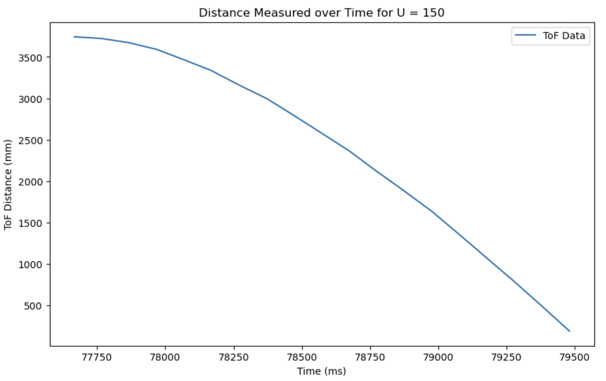
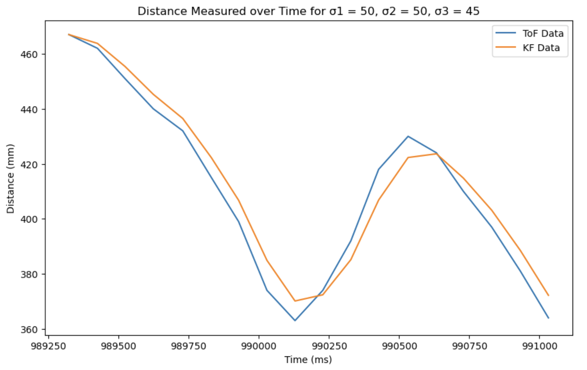

Lab 7: Kalman Filtering
Task 1: Estimating Drag and Mass
To estimate the drag and mass term for my state space model, I created new commands to find the rise time for a step response on my robot.
The command GET_DRAG_MASS initiates the robot’s motion at 150 PWM (consistent with previous tests) value, and the command SEND_DRAG_MASS sends timestamped ToF sensor data for plotting.
Below is a snippet of code in the main loop for the GET_DRAG_MASS command. Similar to code for previous labs, the command sets a flag GET_DRAG_ON to true to allow the robot to start driving.
From the collected data, I found that the robot reached 90% of its steady-state speed in approximately 1.288 seconds. Using this rise time and velocity, I calculated the drag coefficient and mass of the system.
d: 0.370, m: 0.207
Task 2: Initializing Kalman Filter
The code below shows the initialization of the Kalman Filter. Using the d and m values I found in step 1, I defined my A and B matrices. Then, with the dimensions of my state space and sampling time (0.1s per ToF sensor measurement), I calculated the discretized Ad and Bd matrices which will be used in the filter.
My C matrix and x vector are both positive, because sensor measurement and defined robot position are consistent.
In a Kalman Filter, σ1 (position uncertainty) and σ2 (velocity uncertainty) influence how much trust is placed in sensor readings, while σ3 (sensor noise uncertainty) determines how much the filter relies on the model instead of raw measurements. This means increasing σ1 and σ2 increases trust in sensor readings and therefore reactivity to new measurements, and increasing σ3 puts more trust in the model, smoothing out noise but potentially lagging. Accordingly, Σu corresponds to the confidence in the filer, and Σz corresponds to the confidence in measurement.
σ1 and σ2 were calculating using the equation provided in lecture, where I took the square root of 100 divided by the sampling time (0.095s). For σ3, I used the ranging error given in the data sheet after tryring an arbitraty number.
Task 3: Implementing and testing Kalman Filter in Jupyter
Then, using the code provided in lecture, I implemented the filter to test on the robot.
The plots below show the result of moving the car back in forth in front of a wall.
We can see that for a lower σ3 value, the KF filter data more closely follows the ToF data.
Task 4: Implementing Kalmal Filter on Robot
Lastly, I implemente the filter on the robot. First, I installed the BasicLinearAlgebra library on Arduino.
I then initialized my matrices using the values found in previous steps.
Then I created a function kalman_filter and replaced the code in my main loop using extrapolated data with the Kalman Filter data.
Below is a plot of my robot, with Kp = 0.07, Ki = 0.0001, Kd = 0.04!
And this is a video of my robot working that I filmed at home.
References and Acknowledgements
- Lecture slides and code
- Ethan Sarpong for helping me fix my PID control!
- Stephan Wagner's website
- Daria Kot's website
- ChatGPT for correcting grammar and spelling errors, helping with debugging
- Bootstrap template for website